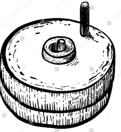
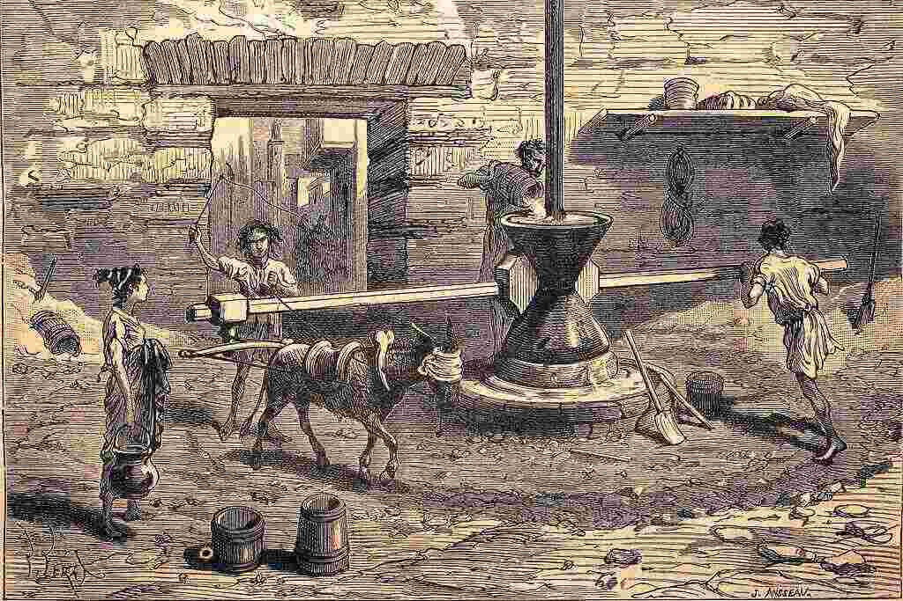
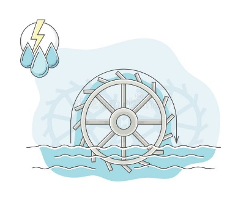

Bienvenue chez Nous à la découverte de la molinologie !
Notre association s'attache à la promotion et à la valorisation des moulins, troisième patrimoine de France.
Adhérer à l'ASME c'est être à l'écoute de tous les riverains de la rivière Essonne et de ses affluents.
Pour tous nous proposons une vie associative riche avec la diffusion de courriels sur l'actualité
de nos rivières, la mise à jour trimestrielle de notre site, l'organisation de conférences, de visites et de découvertes de moulins.
Avec l'aide de spécialistes nous accompagnons dans leurs démarches de valorisation et de restauration les propriétaires de moulins.
Nous sommes affiliés à la Fédération Française des Associations pour la Sauvegarde des Moulins (FFAM).
Nous vous présentons les différents moulins existants : moulins à vent, à eau, à marée ou à vapeur, moulins à farine, à papier, à huile, à tan, à foulon, à poudre… (+ toutes sortes d’applications artisanales comme forges, scieries, menuiseries, chamoiseries…).
Nous vous souhaitons une bonne visite à la découverte du monde des moulins !
Rejoignez-nous ! Sauvons nos moulins !
LE MOULIN DE CHAGRENON (AUVERS-ST-GEORGES)
LE MOULIN POISSARD (ROINVILLE) "Du Grain au Pain"
LE MOULIN DE LA MERCERIE (SERMAISE) "Lieu de Mémoire"
LE MOULIN DE LA BETE (OLLAINVILLE) "Visites Pédagogiques"
Le dernier projet a été lancé ce dimanche 25 juin dans cadre des JPPM 2023.

L’histoire des moulins c’est aussi notre histoire.
Dès le néolithique les hommes ont cultivé des céréales et, pour les consommer plus facilement, ils ont appris à les broyer puis à les moudre finement pour en faire de la farine (nourriture de base = galettes et bouillies).
|
 |
Au début les grains sont écrasés entre deux pierres, puis nos ancêtres feront rouler une pierre ronde dans une pierre creuse avant d’inventer le pilon et son mortier ; ce n’est que plus tard qu’ils feront tourner une pierre cylindrique munie d’un manche sur une pierre (les grains sont introduits par le centre évidé de la meule supérieure). | ||
|
 |
Pour augmenter la production on élargira la taille des meules qui seront actionnées par des esclaves ou des animaux (moulins à sang) et les découvertes de la force du vent et de la puissance de l’eau modifieront nos paysages pour augmenter la production... | ||
|
 |
Une énergie locale et renouvelable. | ||
|
|
STOP DESTRUCTION | ||